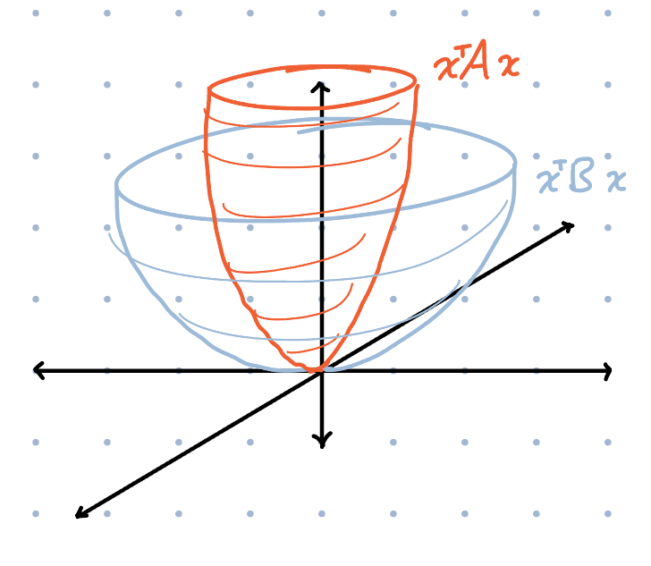

Preconditioners in Optimization
Nov 23, 2025
After talking to Alex Damian, we wanted to understand optimizers from the lens of preconditions and Hessians. This blog post is our notes compiled from reading papers and ChatGPT and we will posit some questions that we are planning on investigating. If there are any issues / missing citations let us know.
Preconditioning - a way we can reshape the geometry of optimization, ideally pointing in better directions.
$$\theta_{t+1} = \theta_t - \eta P \nabla_\theta L(\theta_t)$$
Newtons Method - \(P = H ^{-1}\) where \(H\) is the Hessian of \(L\) w.r.t \(\theta\).
Natural Gradient Descent - \(P = F^{-1}\) where \(F\) is the Fisher Matrix defined as:
$$F(\theta) = \mathbb{E}_{x \sim p(\cdot \mid \theta)} \left[(\frac{\partial}{\partial \theta} \log p(x\mid\theta))^2 \right]$$
Here is the multivariate version:
$$F(\theta) = \mathbb{E}_{x \sim p(\cdot \mid \theta)}[\nabla_\theta \log p(x\mid\theta) \nabla_\theta \log p(x\mid\theta)^\top]$$
This measures how sensitive is our model's outputs \(p(x \mid \theta)\) to perturbations to \(\theta\). The Fisher matrix arises when we are doing steepest descent under a KL penalty metric. There is a connection between \(F\) and \(H\). Throughout this proof we will use: \(\nabla_\theta p = p\,\nabla_\theta \log p\)
$$\begin{align} F(\theta) &= \mathbb{E}_{x \sim p(\cdot \mid \theta)} \!\left[ \nabla_\theta \log p(x\mid\theta)\, \nabla_\theta \log p(x\mid\theta)^\top \right] \\[6pt] &= \mathbb{E}_{x \sim p(\cdot \mid \theta)} \!\left[ \frac{\nabla_\theta p(x\mid\theta)}{p(x\mid\theta)} \; \frac{\nabla_\theta p(x\mid\theta)^\top}{p(x\mid\theta)} \right] \\[6pt] &= \int \frac{\nabla_\theta p(x\mid\theta)\, \nabla_\theta p(x\mid\theta)^\top} {p(x\mid\theta)} \, dx \\[6pt] &= \int \nabla_\theta \log p(x\mid\theta)\; \nabla_\theta p(x\mid\theta)^\top \, dx \qquad\text{(multiply numerator and denominator)} \\[6pt] &= \int \nabla_\theta \big( p(x\mid\theta)\,\nabla_\theta \log p(x\mid\theta)^\top \big) \, dx \;-\; \int p(x\mid\theta)\, \nabla_\theta^2 \log p(x\mid\theta) \, dx \\[6pt] &\quad\text{(product rule: } \nabla (p \nabla \log p^\top) = \nabla p \nabla \log p^\top + p \nabla^2 \log p ) \\[6pt] &= \nabla_\theta \int p(x\mid\theta) \,\nabla_\theta \log p(x\mid\theta)^\top \, dx \;-\; \mathbb{E}_{x \sim p(\cdot\mid\theta)} \big[ \nabla_\theta^2 \log p(x\mid\theta) \big] \\[6pt] &\quad\text{(move derivative outside the integral)} \\[6pt] &= \nabla_\theta \int \nabla_\theta p(x\mid\theta)^\top \, dx \;-\; \mathbb{E}_{x \sim p(\cdot\mid\theta)} \big[ \nabla_\theta^2 \log p(x\mid\theta) \big] \\[6pt] &= \nabla_\theta^2 \int p(x\mid\theta) \, dx \;-\; \mathbb{E}_{x \sim p(\cdot\mid\theta)} \big[ \nabla_\theta^2 \log p(x\mid\theta) \big] \\[6pt] &= \nabla_\theta^2 (1) \;-\; \mathbb{E}_{x \sim p(\cdot\mid\theta)} \big[ \nabla_\theta^2 \log p(x\mid\theta) \big] \\[6pt] &= -\; \mathbb{E}_{x \sim p(\cdot\mid\theta)} \big[ \nabla_\theta^2 \log p(x\mid\theta) \big]. \end{align} $$
Thus, fisher \(F(\theta)\) equals negative expected hessian \(H(\theta)\), when the loss is negative log-likelihood. Fisher and Gauss-newton are similar approximations to Hessian (with some minor differences).
This proof also concludes fisher, which is the expected uncentered second moment of the score function, \(\mathrm{\nabla_\theta log p(x|\theta)}\), is also the expected hessian.
One important caveat here: this Fisher = (− expected Hessian) identity only holds when the expectation is taken under the model's own distribution \(x \sim p_\theta\). In deep learning we train on data from the empirical distribution instead, so the Fisher is no longer exactly the Hessian—it is a curvature surrogate that captures only the positive–semidefinite part of the Hessian (the \(\,\mathbb{E}[\nabla \log p \, \nabla \log p^\top]\) term) and ignores the indefinite second-derivative term that introduces negative curvature in neural networks.
Summarizing what we mentioned so far - we started with a preconditioned gradient update for the weights. This differentiates from SGD or SGD with momentum approaches by incorporating second-order moments as mentioned above. So, now let's directly jump onto the first (?) optimizer which leverages the second-order moment (or its approximation). The best preconditioner is always the full hessian, but intractable in practice.
Adagrad
Let the gradient at step \(t\) be
$$ g_t = \nabla_\theta L(\theta_t). $$
Adagrad constructs its preconditioner by accumulating squared gradients over time:
$$ \hat{H}_t = \sum_{\tau=1}^t g_\tau^2, $$
where the square is elementwise.
This is the same as accumulating only the diagonal of the outer products \(g_\tau g_\tau^\top\), but without ever forming the matrix \(g_\tau g_\tau^\top\) in practice.
The update rule is:
$$ \theta_{t+1} = \theta_t - \eta \, \hat{H}_t^{-1/2} \, g_t. $$
Connection to \(g g^\top\)
Conceptually, Adagrad's preconditioner is related to
$$ \left(\sum_{\tau=1}^t g_\tau g_\tau^\top\right)^{-1/2}, $$
but only its diagonal is actually used, because the full matrix would be prohibitively large.
In practice, Adagrad never computes \(g g^\top\).
It only keeps track of accumulated squared gradients \(g_t^2\), which correspond to the diagonal entries of \(g g^\top\).
This diagonal accumulation acts as a curvature estimate that grows over time, causing the effective learning rate for each parameter to decrease monotonically.
Adam
Adam can be understood as a smoothed, bounded version of Adagrad.
Instead of accumulating all past squared gradients, it keeps an exponential moving average of them.
First moment (momentum)
$$ m_t = \beta_1 m_{t-1} + (1 - \beta_1) g_t. $$
Second moment (EMA of squared gradients)
$$ v_t = \beta_2 v_{t-1} + (1 - \beta_2) g_t^2, $$
where again \(g_t^2\) is elementwise and corresponds to the diagonal of \(g_t g_t^\top\) — but we never form that matrix.
Bias-corrected estimates are:
$$ \hat{m}_t = \frac{m_t}{1 - \beta_1^t}, \qquad \hat{v}_t = \frac{v_t}{1 - \beta_2^t}. $$
The update rule is:
$$ \theta_{t+1} = \theta_t - \eta \, \hat{v}_t^{-1/2} \, \hat{m}_t. $$
Connection to \(g g^\top\)
Adam's second-moment accumulator \(v_t\) is an EMA of the diagonal entries of the outer product \(g_t g_t^\top\):
$$ v_t \approx \text{EMA of } \operatorname{diag}(g_t g_t^\top). $$
As with Adagrad, Adam does not compute \(g g^\top\) explicitly.
The connection is conceptual: Adam uses a smoothed diagonal curvature estimate derived from squared gradients.
This makes Adam a forgetful version of Adagrad, preventing the effective learning rate from decaying indefinitely and providing smoother curvature tracking during optimization.
Before we dive deep into simplying the preconditioner, let's get a good understanding of Kronecker product. The kronecker product between two matrices A and B is defined as:
$$\mathbf{A} \otimes \mathbf{B} = \begin{bmatrix} a_{11}\mathbf{B} & \cdots & a_{1n}\mathbf{B} \\ \vdots & \ddots & \vdots \\ a_{m1}\mathbf{B} & \cdots & a_{mn}\mathbf{B} \end{bmatrix}$$
But why study the Kronecker product?
The Kronecker product is the natural way to represent linear maps on tensors / matrices as ordinary matrices.
Consider a bilinear transformation
$$Y = A X B. \quad A\in \mathbb{R}^{m \times m}, B \in \mathbb{R}^{n\times n}, X \in \mathbb{R}^{m \times n}$$
Here \(X\) is transformed linearly on the left by \(A\) and on the right by \(B\).
Leveraging the Kronecker product, we can rewrite this as
$$\operatorname{vec}(A X B) = (A \otimes B^ \top)\, \operatorname{vec}(X),$$
where we use row-stacking for \(\operatorname{vec}\), e.g.
$$ X = \begin{bmatrix} x_{11} & x_{12} & \cdots \\ x_{21} & x_{22} & \cdots \\ \vdots & \vdots & \ddots \end{bmatrix}, \qquad \operatorname{vec}(X) = \begin{bmatrix} x_{11} & x_{12} & \cdots \;|\; x_{21} & x_{22} & \cdots \;|\; \cdots \end{bmatrix}^T . $$
Why is this property useful?
The Fisher matrix for a weight matrix \(\theta \in \mathbb{R}^{m\times n}\) has dimension
$$F \in \mathbb{R}^{mn \times mn}.$$
Let \(g \in \mathbb{R}^{mn}\) be the row-vectorized gradient, i.e.
$$g = \operatorname{vec}(G)$$
with \(\operatorname{vec}\) stacking rows of \(G \in \mathbb{R}^{m\times n}\).
Computing the preconditioned gradient \(F^{-1} g\) directly requires
$$\text{flops} \sim O(m^2 n^2).$$
Now assume \(F\) admits a Kronecker factorization
$$F = A \otimes B, \qquad A \in \mathbb{R}^{m\times m},\; B \in \mathbb{R}^{n\times n}.$$
Using the row-stacking identity
$$ \operatorname{vec}(A X B) = (A \otimes B^ \top)\, \operatorname{vec}(X), $$
we have
$$ \begin{aligned} F^{-1} g &= (A \otimes B)^{-1} \operatorname{vec}(G) \\ &= (A^{-1} \otimes B^{-1})\, \operatorname{vec}(G) \\ &= \operatorname{vec}(A^{-1} G B^{-T}). \end{aligned} $$
The cost of computing \(A^{-1} G B^{-T}\) is
$$\text{flops} \sim O(m^2 n + m n^2),$$
a dramatic reduction.
Thus, a Kronecker factorization reduces gradient preconditioning from
$$O(d^4) \quad\text{to}\quad O(d^3) \qquad (m=n=d).$$
Finding the Kronecker Factorization for Preconditoning Gradients
In the following, we will use the following kronecker factorization of the preconditioner \(gg^\top\):
$$gg^\top \approx (GG^\top)^{1/2} \otimes (G^\top G)^{1/2}$$
If we ignore the exponent \({1/2}\) then we saying \(Cov(G_{ij},G_{pq})≈(GG^\top)_{ip}(G^\top G)_{jq}\) which is saying that the covariance between two elements in \(G\) is approximated by the product of their rows' covariance and their columns' covariance. This may or may not be a good approximation but we can have some guarantees. In the original Shampoo paper Lemma 8 states:
Lemma 8. Assume that \(G_1,\ldots,G_T \in \mathbb{R}^{m \times n}\) are matrices of rank at most \(r\). Let \(g_t = vec(G_t)\) denote the vectorization of \(G_t\) for all \(t\). Then, for any \(\epsilon \ge 0\)
$$\epsilon I_{mn} \;+\; \frac{1}{r} \sum_{t=1}^T g_t g_t^\top \;\;\preceq\;\; \left( \epsilon I_m + \sum_{t=1}^T G_t G_t^\top \right)^{1/2} \;\otimes\; \left( \epsilon I_n + \sum_{t=1}^T G_t^\top G_t \right)^{1/2}.$$
The \(\preceq\) is a Loewner order meaning that the right hand side minus the left hand side is still a PSD matrix. Here \(A \preceq B\) means \(B - A\) is positive semidefinite, or equivalently \(x^\top A x \le x^\top B x\) for all \(x\) a shown by the picture below.

This provides some notion of how the geometry of the preconditioner is preserved with the Kronecker factorization. We will now go through this proof. It uses Lemma 9 from the paper which states:
Let \(G\) be an \(m \times n\) matrix of rank at most \(r\) and denote \(g = vec(G)\). Then
$$\frac{1}{r} gg^\top \;\preceq\; I_m \otimes (G^\top G) \qquad\text{and}\qquad \frac{1}{r} gg^\top \;\preceq\; (G G^\top) \otimes I_n .$$
proof from the paper
Write the singular value decomposition
$$ G = \sum_{i=1}^r \sigma_i\, u_i v_i^\top , $$
where \(u_1,\ldots,u_r \in \mathbb{R}^m\) and \(v_1,\ldots,v_r \in \mathbb{R}^n\) are orthonormal.
Then
$$ g = \sum_{i=1}^r \sigma_i (u_i \otimes v_i), \qquad gg^\top = \Big( \sum_{i=1}^r \sigma_i (u_i \otimes v_i) \Big) \Big( \sum_{i=1}^r \sigma_i (u_i \otimes v_i) \Big)^{\!\top}. $$
For any vectors \(w_1,\ldots,w_r\),
$$ \Big( \sum_{i=1}^r w_i \Big)\Big( \sum_{i=1}^r w_i \Big)^{\!\top} \;\le\; r \sum_{i=1}^r w_i w_i^\top , $$
since for any vector \(x\) we may write \(\alpha_i = x^\top w_i\) and because of Jensen's Inequality of convex functions
$$ x^\top\Big( \sum_i w_i \Big)\Big( \sum_i w_i \Big)^{\!\top}x = \Big( \sum_i \alpha_i \Big)^2 \le r \sum_i \alpha_i^2 = r\, x^\top \Big( \sum_i w_i w_i^\top \Big)x . $$
Applying this with \(w_i = \sigma_i (u_i\otimes v_i)\) gives
$$ gg^\top \le r \sum_{i=1}^r \sigma_i^2 (u_i\otimes v_i)(u_i\otimes v_i)^\top = r \sum_{i=1}^r \sigma_i^2 (u_i u_i^\top) \otimes (v_i v_i^\top) . $$
Since \(GG^\top = \sum_{i=1}^r \sigma_i^2 u_i u_i^\top\) and \(v_i v_i^\top \le I_n\) for all \(i\),
$$ \frac{1}{r} gg^\top \le \sum_{i=1}^r \sigma_i^2 u_i u_i^\top \otimes I_n = (GG^\top)\otimes I_n . $$
Similarly, because \(G^\top G = \sum_{i=1}^r \sigma_i^2 v_i v_i^\top\) and \(u_i u_i^\top \le I_m\),
$$ \frac{1}{r} gg^\top \le I_m \otimes (G^\top G) . $$
What is interesting about this Lemma is that if we think about the the local region around the current parameter \(\theta\) and we sample gradients \(G\) for one linear layer \(W\), we can bound the uncentered covariance \(gg^\top\) by the covariance of rows or columns in \(G\).
Finally we can prove Lemma 8, here is a shorter version of paper's proof
Introduce the matrices
$$ A_m \;\coloneqq\; \epsilon I_m + \sum_{t=1}^T G_t G_t^\top, \qquad B_n \;\coloneqq\; \epsilon I_n + \sum_{t=1}^T G_t^\top G_t . $$
From Lemma 9 we have
$$ \epsilon I_{mn} + \frac{1}{r} \sum_{t=1}^T g_t g_t^\top \;\le\; I_m \otimes B_n, \qquad \epsilon I_{mn} + \frac{1}{r} \sum_{t=1}^T g_t g_t^\top \;\le\; A_m \otimes I_n . $$
Observe that \(I_m \otimes B_n\) and \(A_m \otimes I_n\) commute with each other.
Applying Lemma 5 from the paper which is (operator monotonicity of geometric mean by Ando et al) followed by Lemma 3(iii) and Lemma 3(i) gives
$$ \epsilon I_{mn} + \frac{1}{r} \sum_{t=1}^T g_t g_t^\top \;\le\; \big( I_m \otimes B_n \big)^{1/2} \big( A_m \otimes I_n \big)^{1/2}. $$
Using Lemma 3(iii) again,
$$ \big( I_m \otimes B_n \big)^{1/2} = I_m \otimes B_n^{1/2}, \qquad \big( A_m \otimes I_n \big)^{1/2} = A_m^{1/2} \otimes I_n, $$
and then Lemma 3(i) yields
$$ \big( I_m \otimes B_n^{1/2} \big) \big( A_m^{1/2} \otimes I_n \big) = A_m^{1/2} \otimes B_n^{1/2}. $$
Thus,
$$ \epsilon I_{mn} + \frac{1}{r} \sum_{t=1}^T g_t g_t^\top \;\preceq\; A_m^{1/2} \otimes B_n^{1/2}, $$
which proves the lemma.
For the actual update, we maintain left and right Shampoo accumulators at step \(t\):
$$ L_t \;\coloneqq\; \epsilon I_m + \sum_{s=1}^t G_s G_s^\top, \qquad R_t \;\coloneqq\; \epsilon I_n + \sum_{s=1}^t G_s^\top G_s . $$
From Lemma 8, the full-matrix AdaGrad preconditioner satisfies \(\tilde H_t^2 \;\preceq\; L_t^{1/2} \otimes R_t^{1/2}\), so we choose the Shampoo preconditioner
$$ H_t^2 \;=\; L_t^{1/2} \otimes R_t^{1/2} \quad\Longrightarrow\quad H_t \;=\; L_t^{1/4} \otimes R_t^{1/4}. $$
The preconditioned step in vector form is
$$ w_{t+1} = w_t - \eta H_t^{-1} g_t = w_t - \eta\,(L_t^{-1/4}\otimes R_t^{-1/4})\,g_t. $$
Using \(\,(A\otimes B)\,\mathrm{vec}(G)=\mathrm{vec}(A G B)\) (here \(A,B\) are symmetric), we obtain the matrix update
$$ W_{t+1} = W_t \;-\; \eta\,L_t^{-1/4} G_t R_t^{-1/4}. $$
Muon
We can take the Shampoo update, remove the running sums and see what happens if we substitute with the SVD of \(G_t\). Following Story II of Jeremy and Laker's paper
$$W_{t+1} = W_t - \eta \,(U_t \Sigma_t^{-1/2} U_t^\top)\, (U_t \Sigma_t V_t^\top)\, (V_t \Sigma_t^{-1/2} V_t^\top) $$
$$ = W_t - \eta\,U_t\,\Sigma_t^{1 - 1/2 - 1/2}\,V_t^\top = W_t - \eta\,U_t V_t^\top . $$
$$ W_{t+1} = W_t - \eta\,U_t V_t^\top $$
So this is the Gradient with the singular values all clipped to 1 - which is equivalent to the steepest descent under the spectral norm.
When discussing with Alex, he recommended one way to compare these optimizers is to train them and then take their respective preconditioners and then run local updates. We are still working on this.
References
https://kvfrans.com/matrix-whitening/
https://arxiv.org/abs/1802.09568
https://arxiv.org/abs/2406.17748
https://kellerjordan.github.io/posts/muon/